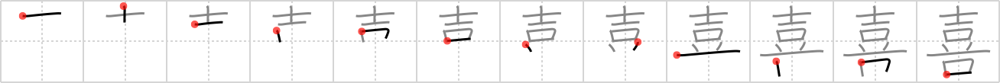

喜
← →
rejoice

Reading:
On-Yomi: キ — Kun-Yomi: よろこ.ぶ、よろこ.ばす
Heisig story:
Drum . . . mouth.
Koohii stories:
1) [nest0r] 31-1-2008(189): The samurai sitting on the drum is on a stage, and the people below him are rejoicing with their mouths in unison. It helps me to imagine the placement this way.
2) [dingomick] 13-3-2007(59): Rejoice with the sound of drums and voice!
3) [scottamus] 5-9-2006(42): In the taiko (drum (#1444 鼓)) song of rejoicing, the drummers shout with open mouths.
4) [tummai] 30-5-2008(30): Ten beans in my mouth! I was starving so this small meal is enough for me to rejoice!
5) [Green_Airplane] 3-8-2008(23): Think Monty Python and the Holy Grail. Sir Robin's ministrals, following the group with their drums: "One winter they had to eat (therefore the mouth) Robin's ministrals… and there was much rejoicing.